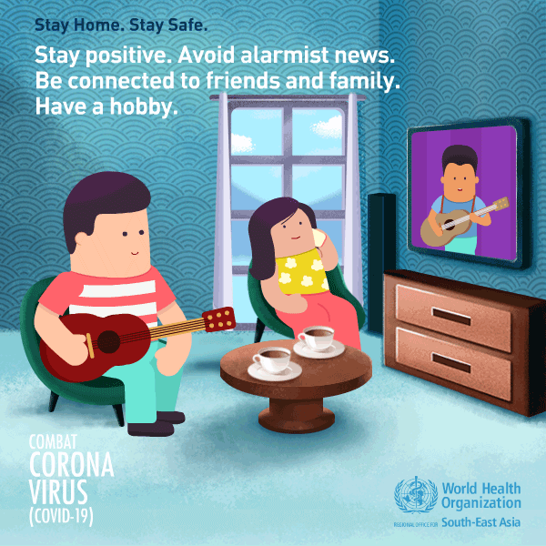
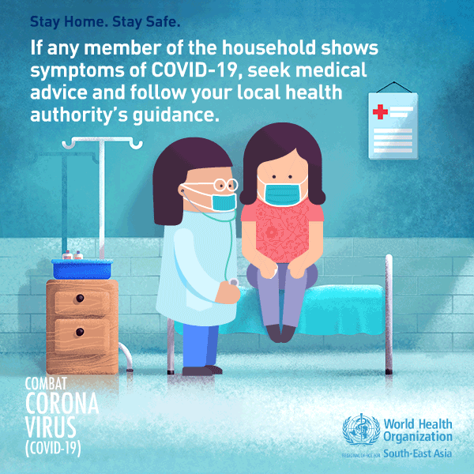

Coronavirus disease (COVID-19) is an infectious disease caused by the SARS-CoV-2 virus.
Most people infected with the virus will experience mild to moderate respiratory illness and recover without requiring special treatment. However, some will become seriously ill and require medical attention. Older people and those with underlying medical conditions like cardiovascular disease, diabetes, chronic respiratory disease, or cancer are more likely to develop serious illness. Anyone can get sick with COVID-19 and become seriously ill or die at any age.
The best way to prevent and slow down transmission is to be well informed about the disease and how the virus spreads. Protect yourself and others from infection by staying at least 1 metre apart from others, wearing a properly fitted mask, and washing your hands or using an alcohol-based rub frequently. Get vaccinated when it’s your turn and follow local guidance.
The virus can spread from an infected person’s mouth or nose in small liquid particles when they cough, sneeze, speak, sing or breathe. These particles range from larger respiratory droplets to smaller aerosols. It is important to practice respiratory etiquette, for example by coughing into a flexed elbow, and to stay home and self-isolate until you recover if you feel unwell.
Stay Informated:
Get vaccinated as soon as it’s your turn and follow local guidance on vaccination.
Keep physical distance of at least 1 metre from others, even if they don’t appear to be sick. Avoid crowds and close contact.
Wear a properly fitted mask when physical distancing is not possible and in poorly ventilated settings.
Clean your hands frequently with alcohol-based hand rub or soap and water.
Cover your mouth and nose with a bent elbow or tissue when you cough or sneeze. Dispose of used tissues immediately and clean hands regularly.
If you develop symptoms or test positive for COVID-19, self-isolate until you recover.
Wear a mask properly:
Make sure your mask covers your nose, mouth and chin.
Clean your hands before you put your mask on, before and after you take it off, and after you touch it at any time.
When you take off your mask, store it in a clean plastic bag, and every day either wash it if it’s a fabric mask or dispose of it in a trash bin if it’s a medical mask.
Don’t use masks with valves.
Make your environment safer:
The risks of getting COVID-19 are higher in crowded and inadequately ventilated spaces where infected people spend long periods of time together in close proximity.Outbreaks have been reported in places where people have gather, often in crowded indoor settings and where they talk loudly, shout, breathe heavily or sing such as restaurants, choir practices, fitness classes, nightclubs, offices and places of worship.
To make your environment as safe as possible:
Avoid the 3Cs: spaces that are closed, crowded or involve close contact.
Meet people outside. Outdoor gatherings are safer than indoor ones, particularly if indoor spaces are small and without outdoor air coming in.
If you can’t avoid crowded or indoor settings, take these precautions:
Open a window to increase the amount of natural ventilation when indoors.
Wear a mask
Keep good hygiene:
To ensure good hygiene you should:
Regularly and thoroughly clean your hands with either an alcohol-based hand rub or soap and water. This eliminates germs that may be on your hands, including viruses.
Cover your mouth and nose with your bent elbow or a tissue when you cough or sneeze. Dispose of the used tissue immediately into a closed bin and wash your hands.
Clean and disinfect surfaces frequently, especially those which are regularly touched, such as door handles, faucets and phone screens.
what to do if you feel unwell:
If you have a fever, cough and difficulty breathing, seek medical attention immediately. Call by telephone first and follow the directions of your local health authority.
Know the full range of symptoms of COVID-19. The most common symptoms of COVID-19 are fever, dry cough, tiredness and loss of taste or smell. Less common symptoms include aches and pains, headache, sore throat, red or irritated eyes, diarrhoea, a skin rash or discolouration of fingers or toes.
Stay home and self-isolate for 10 days from symptom onset, plus three days after symptoms cease. Call your health care provider or hotline for advice. Have someone bring you supplies. If you need to leave your house or have someone near you, wear a properly fitted mask to avoid infecting others.
Keep up to date on the latest information from trusted sources, such as WHO or your local and national health authorities. Local and national authorities and public health units are best placed to advise on what people in your area should be doing to protect themselves.
Symptoms Of Covid-19:
Symptoms of COVID-19 can vary, but mild cases often experience fever, cough, and fatigue. Moderate cases may have difficulty breathing or mild pneumonia. While severe cases may have severe pneumonia, other organ failure & possible death. Anyone experiencing difficulty breathing should seek immediate medical attention
How To Protect Yourself From Covid-19:
Your hands frequently with alcohol-based hand rub or soap and water. Cover your mouth and nose with a bent elbow or tissue when you cough or sneeze. Dispose of used tissues immediately and clean hands regularly. If you develop symptoms or test positive for COVID-19, self-isolate until you recover
Clean your home regularly, particularly frequently touched surfaces like
Stay home stay safe. Stay physically fit. Exercise regulary. Eat a nutritious diet. Don't smoke.
Stay home stay safe. Follow the Golden Rule. Wash your hands frequently with soap and water or use alchohol based hand-rub.
Stay home stay safe. If you show symptoms of COVID-19, self isolate yourself, wear a mask around others and seek medical advice.

Stay positive. Avoid alarmist news. Be connected to friends and family. Have a hobby.

If any member of the household shows symptoms of Covid-19, seek medical advice and follow your local health authority's guidance.